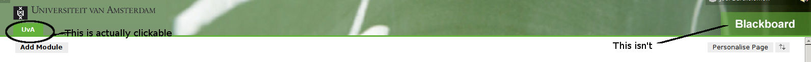

Week 1
Assignment:
Monitor the use and needs for a learning management system (individual)
Deadline: Thursday Oct 29! Report back in workshop on Thursday
Observe how you use blackboard. Log your observations, and make two or three relevant aggregations and visualisations. Carefully choose what you will log.
How to determine what to log:
- You are looking for improvements. Monitor for effectiveness (understanding), inefficiencies (effort), imperfections, annoyances.
- You are looking for opportunities. IT can foster interactivity (personalised content), collaboration, innovation in behaviour, tools and culture.
Set up portfolio (group)
Your work and progress are to be made available to us. Set it up and provide us access. Under blackboard - assignments, you will find a link (test) by which you can communicate us the access details.
Knowledge acquisition (group)
Conduct three (video-recorded) interviews. For the workshop prepare to show one minute of interviewing, clearly showing the interviewer and the interviewee. That minute can be one fragment, or a montage of several fragments. Show some situations you want to get feedback about. Publish the recordings of the complete interviews and the one minute selection on your website, and provide us with the login credentials.
What knowledge do you need:
- See section “How to determine what to log” .
- To determine improvements ands opportunities you need to get an understanding of the domain.
- Bring in the outside view: what can you learn from other domains.
- Technology push: how to make the most use of technological possibilities and to identity impediments.
Getting started with interviewing:
Goal of this week is not to get good information, but to get familiar with interviewing.
- Conduct your interviews without any preparation.
- You may interview any person you like, but at least one you don’t know.
- Approach the candidate with an opening sentence like: “Is it ok if I ask you some questions for an assignment of my course? It will take no more than 5 minutes. It is about the replacement of blackboard. I’ve been asked to record our interview on video to get feedback on my interviewing technique. The video will be deleted after the course, and will not be distributed.”
- Ask questions like: “Do you use blackboard often?”, “Do you like blackboard”, “What is good about it“, “What don’t you like about it“
- Reflect with your partner.
Individual logs
Observations made by Felix Barten
General impressions of using blackboard
While I’ve used a number of different learning management systems during prior studies I have never worked with Blackboard before. After eight weeks of using blackboard a few things have become apparent to me. In general the Blackboard works reasonably well compared to other things I experienced. However there are a few obvious flaws in the system.
Usage
I use the Blackboard system to access course information, assignments, grades and relevant materials of courses im currently following.
Functionality
- Navigation could be better (buttons that seem clickable aren’t and the other way around)
- Random outage times (Sunday for 3-5 hours and on a monday evening)
Annoyances
- Logged out EVERY TIME and doesn’t redirect back to login, instead gives a generic error.
- Can’t submit files when you want to
- Errors that can’t be explained.
- Sometimes functionalities just don’t work in a single browser
Observations made by Joel Bartholomew
-
I use blackboard to access course assignments, course material and to submit assignments.Sometimes I use it to see grades
-
I dislike the fact that it constantly gives you access denied due to logging users out automatically after a short time.
-
There are some compatibility issues with popular browsers like Google chrome
-
The user interface is not the most intuitive in a number places. E.G: It is sometimes not sure that items are clickable such as:

The following is a table depicting the average number of times I visit blackboard per day
| Day | Average number of visits |
|---|---|
| Monday | 0 |
| Tuesday | 0 |
| Wednesday | 4 |
| Thursday | 2 |
| Friday | 1 |
| Saturday | 0 |
| Sunday | 3 |
The usage amounts are probably due to the fact that blackboard was never actually used for the Software testing course while the Software Architecture course made full use of blackboards. The amount of visits on Sunday is most likely due the fact my group often turned in assignments on that day and I seem to have a tendency of leaving everything to the last minute…
Interviews
In week 1 we have conducted a couple of interviews to become familiar with interviewing people.